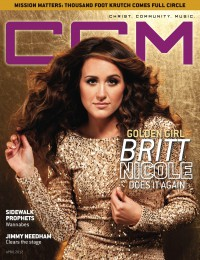

CCM Digital, Apr 2012
| Cover |
|---|
|  |
 Online Exclusively Online Exclusively |
| Writers in this Issue |
| Argyrakis, Andy Aspinwall, Grace S. Assad, Audrey Conner, Matt Greer, Andrew Huguley, Kevin Jackson, Tom Jamison, Joshua Lusk, Caroline Siler, Steve Tasker, Nathan |
Britt Nicole
Cover Feature:- "Golden Girl... Britt Nicole Does It Again" by Caroline Lusk
- "Wannabes" by Caroline Lusk
- "Clearing the Stage" by Caroline Lusk
- "A Lesson in Love"
Worship:
- "From him, to Him" by Caroline Lusk
- "Worshippers to Watch" by Caroline Lusk
- "Give Them Jesus" by Joshua Jamison
- Take 6 by Andrew Greer
- MyChildren MyBride by Andy Argyrakis
- The Beautiful Refrain by Matt Conner
- Eisley by Matt Conner
- "The Ultimate Compliment" by Steve Siler
Out & About: "Ann-Margaret" by Andy Argyrakis
Out & About Newworldson by Andy Argyrakis
Reviews & New Releases:
- Passion Band - White Flag by Andrew Greer
- Dan McCaulay - From You For You by Grace S. Aspinwall
- Charles Billingsley - Never Forsaken by Grace S. Aspinwall
- Todd Agnew - How To Be Loved by Matt Conner
- Jeremy Camp - I Still Believe: The Number Ones Collection by Andy Argyrakis
- Jimmy Needham - Clear the Stage by Grace S. Aspinwall
- Matt Brouwer - Till the Sunrise by Grace S. Aspinwall
- Thousand Foot Krutch - The End Is Where We Begin by Andy Argyrakis
- MyChildren MyBride - MyChildren MyBride by Matt Conner
- Owl City - Live From Los Angeles DVD by Andy Argyrakis
- Julie Lee - Julie Lee & the Baby-Daddies by Matt Conner
- Starfield - The Kingdom by Matt Conner
- Holly Spears - Heartache to Hope by Andrew Greer
- TobyMac - Dubbed and Freq'd: A Remix Project by Matt Conner
- Manafest - Fighter by Andrew Greer
- Shirley Murdock - Live: The Journey by Andrew Greer
- The Crabb Family - Together Again by Andy Argyrakis
- Tim McGraw - Emotional Traffic by Andy Argyrakis
- Dave Barnes - Stories to Tell by Andrew Greer
- "Ghost on the Canvas Tour, Rialto Square Theatre, Joliet, IL" by Andy Argyrakis
- "Only Fools Rush In" by Kevin Huguley
- "Tracing the Crimson Thread" by Nathan Tasker
- "An Ending, a Beginning, and all the Places in Between" by Caroline Lusk
- "Myths About the Live Show, Part 2" by Tom Jackson
Relevant Links
For more information about CCM Digital visit .This issue is available exclusively online.
© 2011 CMnexus. Last updated September 2019. Contact: editor -AT- cmnexus -DØT- org About